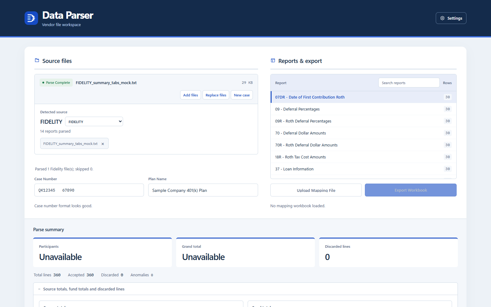
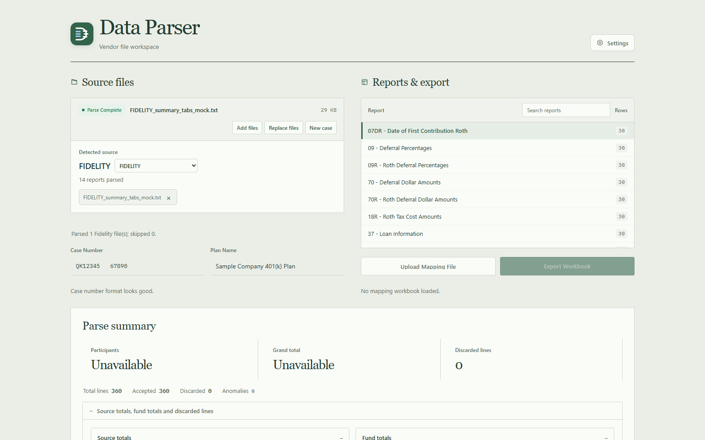
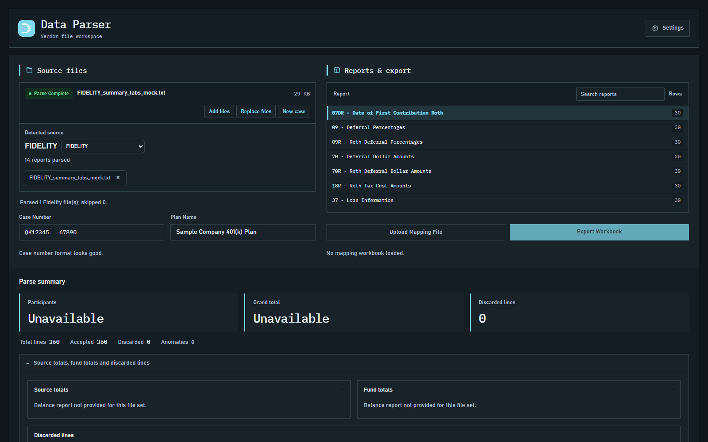
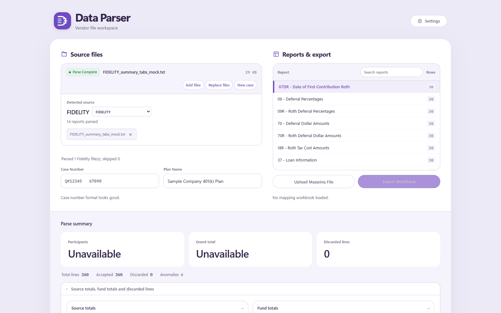
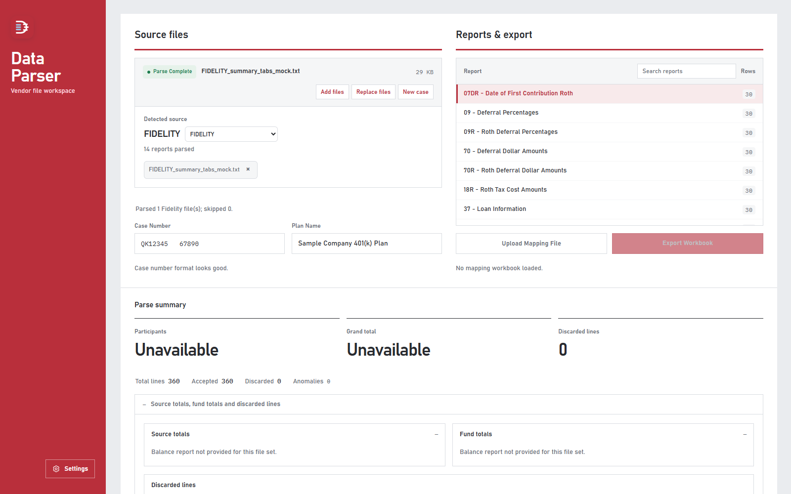

One app. Five looks.
Explore five working versions of Data Parser. Each keeps the same file loading, report tools, mapping checks and Excel export. Previews use the included test file.

Harbor
Clear, confident, blue.
A full-width navy masthead, sharp blue controls and an open, spacious workspace.
Open working app
Meridian
Calm, considered, green.
A large serif wordmark, soft green surfaces and generous spacing for a calmer review.
Open working app
Carbon
Focused, technical, dark.
A compact graphite console with cyan selection markers, square controls and precise data typography.
Open working app
Studio
Soft, spacious, modern.
A lavender canvas, rounded white work surfaces and large, friendly typography.
Open working app
Signal
Direct, architectural, red.
A fixed identity rail, white workbench and restrained red accents that make actions easy to spot.
Open working app